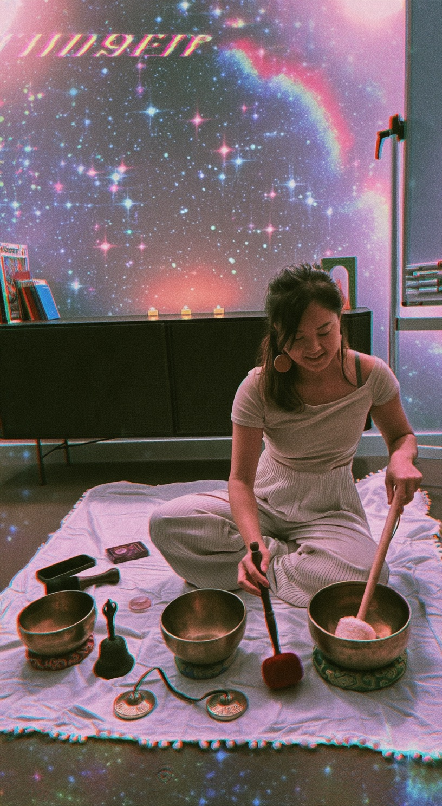

About me
Hi, I'm Vivi.
I'm Vivi — a certified sound healing practitioner trained in Nepal and Reiki Level 2 practitioner based in East London.

My story
My path here started with loss. When my grandmother passed away, I travelled to Nepal on my own — and that journey became the beginning of everything. It led me into sound healing, and into reiki as a way of understanding my own healing.
Since then, the practice has kept growing. I'm also certified in cacao ceremony facilitation, I've completed Pranic Healing Levels 1–3, and I've been studying BaZi on the side — something that's quietly reshaped how I see myself and the people I work with.
Wavesbychin is where all of that comes together: sound, breathwork, ceremony, and a genuine belief that stillness is something we can return to, not something we have to chase.
My path
How I work
Close, Intentional Sound
I work primarily with Tibetan singing bowls, and I bring the sound close — moving near each person during a session so the vibration isn't just heard, but felt. It's a more intimate way of working, and it's central to how I practise. If you'd prefer more distance, tell me beforehand and I'll keep it.
Shaped Around You
Each session has a clear shape — arrival, sound, rest, close — and within it I draw on breathwork, chanting, meditation, reiki, cacao or tea, depending on the group and the time we have.
What I don't claim
This is live sound and rest, not medical care. It makes no health claims and doesn't replace advice or treatment from a professional.
Want to ask something first?
Write with a date, a room, or just a question. Replies come from wavesbychin@gmail.com within two working days.
Send a message